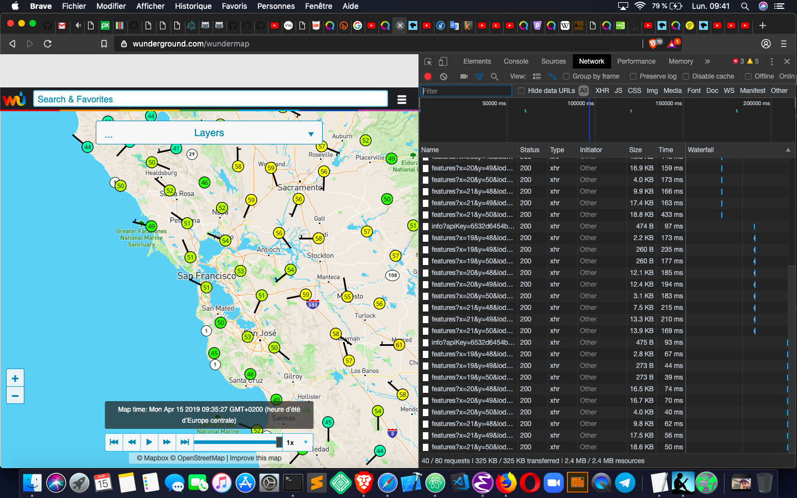
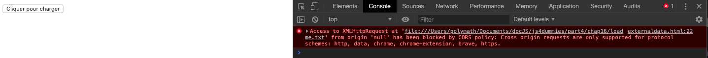
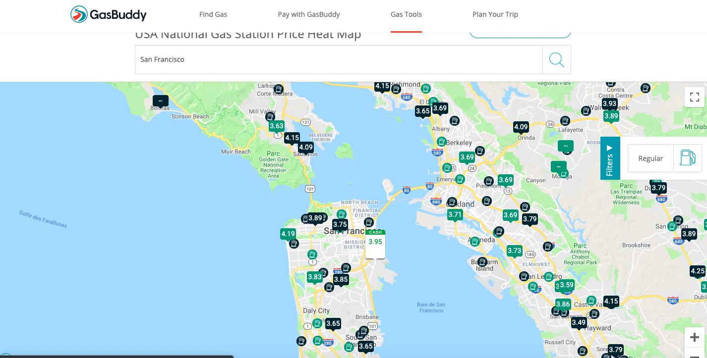

Tim Berners-Lee« Le Web ne fait pas que connecter des machines. Il connecte des gens. »
Ajax est un acronyme qui signifie Asynchronous JavaScript + XML. Ce terme est utilisé pour décrire une méthode d'utilisation de JavaScript, du modèle DOM, de HTML et de l'objet HMLHttpRequest pour raffraîchir des parties d'une page Web avec des données dynamiques sans avoir à recharger la page entière. Ajax a d'abord été implémenté à une large échelle par Google pour sa messagerie Gmail en 2004, et son nom définitif lui a été donné par James Garret en 2005.
Le modèle DOM de HTML change la page de manière dynamique. L'importante innovation apportée par Ajax a été l'utilisation de l'objet XMLHttpRequest pour retrouver des données sur le serveur de façon asynchrone (en arrière-plan, si vous préférez), sans blocage de l'exécution du reste du code JavaScript dans la page Web.
Bien qu'Ajax reposait à l'origine sur des données au format XML (pout Extensible Markup Language, ou langage de balisage extensible), il est plus courant aujourd'hui pour les applications Ajax de faire appel à un format appelé JSON (pour JavaScript Object Notation). Bien entendu, dans ce cas, le X final devrait plutôt être remplacé par un J pour donner Ajaj, mais il faut reconnaître que cette appellation serait moins poétique.
Lorsque les développeurs Web ont commencé à utiliser Ajax, celui-ci est devenu l'un des marqueurs de ce qu'on a appelé le Web 2.0. Avant Ajax, la méthode la plus courante pour montrer des données dynamiques consistait à télécharger une nouvelle page depuis le serveur.
Prenons l'exemple d'un catalogue en ligne. Pour naviguer entre les catégories ou les résultats de recherches, vous pouvez cliquer sur des liens qui provoquent le rafraîchissement de l'ensemble de la page. Même si elle reste toujours très courante, la technique consistant à recharger toute la page alors que seule une partie de son contenu a changé est inutilement lente, ce qui peut de surcroît laisser une impression un peu désagréable à l'utilisateur.
Comparons maintenant le site précédent avec celui des amis de Google, Google Plus. Google Plus utilise Ajax pour charger de nouveaux contenus dans les « pavés » de la page, tandis que la barre de navigation reste statique.
En plus de rendre la navigation plus fluide, Ajax est également excellent pour créer des éléments « vivants » dans une page Web. Avant Ajax, si vous vouliez afficher des données dynamiques, comme un graphique en temps réel, ou encore une vue actualisée de la boîte de réception d'une messagerie, vous deviez soit utiliser un plug-in (comme Adobe Flash), ou provoquer périodiquement un rafraîchissement de la page.
Avec Ajax, il est possible d'actualiser périodiquement les données grâce à un processus asynchrone qui s'exécute en arrière-plan, et qui ne met à jour que les éléments de la page qui ont besoin d'être modifiés.
Le site Wundermap (https://www.wunderground.com/wundermap) montre une carte météo qui change constamment. Les données de cette carte sont récupérées sur des serveurs distants en utilisant Ajax.
Sur la figure  les outils de développement de Brave ont été ouverts en activant l'onglet Network (réseau). Celui-ci montre toutes les activités réseau concernant la page Web courante. Lorsqu'une page est chargée, cela concerne les requêtes et les téléchargements du code HTML, CSS et JavaScript ainsi que des images. Une fois ce chargement terminé, l'onglet Network affiche aussi les requêtes et les réponses HTTP asynchrones qui rendent Ajax possible.
L'objet XMLHttpRequest fournit un moyen pour les navigateurs Web d'envoyer une requête au serveur pour obtenir en retour des données sans avoir à raffraîchir la page.
L'objet XMLHttpRequest a été créé et implémenté en premier par Microsoft dans son navigateur Internet Explorer. C'est devenu depuis un standard du Web, et il a été adapté par tous les navigateurs Web modernes.
Vous pouvez utiliser les méthodes et les propriétés de l'objet XMLHttpRequest pour récupérer des données depuis un serveur distant ou sur votre serveur local. En dépit de son nom, l'objet XMLHttpRequest peut obtenir d'autres types de données que du XML, et il est capable d'utiliser pour cela différents protocoles en plus de HTTP.
Le script de la page externaldata montre comment vous pouvez utiliser XMLHttpRequest pour charger le contenu d'un document de texte externe (contenant en l'occurrence une ligne de code HTML) dans la page Web HTML courante.
La première ligne de code à l'intérieur de la fonction crée le nouvel objet XMLHttpRequest et lui donne comme nom oReq :
var oReq = new XMLHttpRequest();
Les méthodes et propriétés de l'objet XMLHttpRequest sont maintenant accessibles via l'objet oReq.
La seconde ligne assigne une fonction, reqListener, à l'événement onload de l'objet oReq. Le but de cette instruction est de forcer l'appel à reqListener lorsque oReq charge un document :
oReq.onload = reqListener;
La troisième ligne utilise la méthode open pour créer une requête :
oReq.open("get", "loadme.txt", true);
Dans ce cas, la fonction utilise la méthode HTTP get pour charger le fichier appelé loadme.txt. Le dernier paramètre est l'argument async. Il spécifie le mode synchrone ou asynchrone de la requête. Si la valeur est false, la méthode send ne retournera rien jusqu'à ce que la requête soit totalement traitée. Si sa valeur est true, des notifications sur l'état d'avancement de la requête seront fournies via un gestionnaire d'événement. Du fait que le gestionnaire est configuré ici pour surveiller l'événement load, une requête asynchrone est ce qui nous intéresse.
Il est peu probable que vous puissiez vous trouver dans une situation où vous voudriez définir l'argument async avec la valeur false. En fait, certains navigateurs ont commencé à ignorer cet argument s'il vaut false, donc à le traiter comme valant true dans tous les cas, et ce afin d'éliminer le mauvais effet que peuvent avoir sur l'expérience utilisateur les requêtes synchrones.
La dernière ligne de la fonction documentLoader transmet la requête créée avec la méthode open :
oReq.send;
La méthode open récupère la dernière version du fichier demandé. Les applications réellement dynamiques utilisent souvent des boucles pour demander de manière répétée les données disponibles les plus récentes à un serveur utilisant Ajax.
Si vous exécutez le script de la page externaldata dans un navigateur Web, vous n'allez pas obtenir le résultat que vous escomptiez. Si vous ouvrez par exemple la console dans les outils de développement, vous devriez voir (au moins) un message d'erreur semblable à celui-ci 
Le problème, ici, tient à ce qui est appelé same-origin policy (règle de même origine). Pour éviter que des pages Web puissent, à l'insu de l'utilisateur, télécharger par l'intermédiaire de XMLHttpRequest du code qui pourrait être dommageable (virus ou autre), les navigateurs renvoient par défaut une erreur lorsqu'un script essaie de charger une URL qui n'a pas la même origine que l'adresse courante. Si vous ouvrez par exemple une page Web provenant du site www.site1.com, et qu'un script tente de retrouver des données à l'adresse www.site2.com, le navigateur réagira par une erreur semblable à celle qui apparaît sur la figure ci-dessus.
Cette règle vaut aussi pour les fichiers qui sont enregistrés sur votre ordinateur local. Si ce n'était pas le cas, XMLHttpRequest pourrait être utilisé pour compromettre la sécurité de votre système (et donc la vôtre).
Dans le cas des exemples de ce livre, il n'y a absolument aucune raison de s'inquiéter à ce sujet. Cependant, pour que les exemples de ce chapitre fonctionnent correctement sur votre ordinateur, il faut bien qu'il existe un moyen de contourner la règle same-origin policy.
La première méthode consiste à placer le fichier HTML qui contient la fonction documentLoader et le fichier de texte ensemble sur le même serveur Web.
La seconde méthode revient à désactiver temporairement les restrictions same-origin policy dans votre navigateur.
Ces instructions vous permettent de tester vos propres fichiers (dans le cas où vous n'avez pas installé un serveur Web sur votre machine) uniquement sur votre propre ordinateur. Ne surfez pas sur le Web avec les restrictions same-origin policy désactivées ! Vous pourriez exposer votre ordinateur à être infecté par du code malveillant.
Pour désactiver les restrictions same-origin policy sous macOS :
/Applications/Brave.app/Contents/MacOS/Brave --disable-web-security
Vous pouvez maintenant exécuter localement des fichiers contenant des requêtes Ajax, et ce jusqu'à ce que vous refermiez la fenêtre du navigateur. Lors de la prochaine ouverture, les restrictions de sécurité seront automatiquement réactivées.
Il est assez courant qu'une application Web ait besoin d'adresser des requêtes à des serveurs différents pour obtenir les données dont elle a besoin. Par exemple, Google fournit ses géographiques gratuitement à des applications tierces.
Pour que les transactions entre serveurs soient sécurisées, il faut disposer de mécanismes pour que les navigateurs et les serveurs soient capables de faire fi de leurs différences afin de pouvoir collaborer en toute confiance.
Jusqu'ici, la meilleure méthode permettant d'autoriser ou d'interdire le partage de ressources entre serveurs est le standard appelé CORS (pour Cross-Origin Resource Sharing, ou encore croisement de ressources - ou de domaine).
Pour voir CORS en action, jetez un coup d'oeil à l'onglet Network des outils de développement tout en naviguant sur le site Wundermap. Pour cela, cliquez sur un des liens qui indique http://stationdata.wunderground.com/cgi-bin/stationlookup.
Vous devriez voir sous l'onglet Headers le texte suivant dans l'en-tête http :
Access-Control-Allow-Origin:*
Il s'agit de l'en-tête de la réponse CORS pour laquelle ce serveur particulier est configuré. L'astérisque après le deux-points indique que ce serveur peut accepter des requêtes de n'importe quelle origine. Si le propriétaire du site www.wunderground.com voulait restreindre l'accès aux données provenant de certains serveurs spécifiques ou d'utilisateurs authentifiés, il utiliserait aussi CORS.
Dans le script de la page externaldata vous avez utilisé Ajax pour ouvrir et afficher un document de texte contenant une simple ligne de code HTML. Un autre usage courant d'Ajax consiste à demander et à recevoir des données pour qu'elles soient traitées par le navigateur.
Par exemple, nos amis américains disposent d'un site, gasbuddy.com, qui leur permet d'utiliser une carte fournie par Google pour afficher des prix du carburant à tel ou tel endroit, comme l'illustre la figure 
Si vous examinez ce qu'indique l'onglet Network dans gasbuddy.com, vous pourrez constater que certaines requêtes ont des réponses dont le code ressemble à celui-ci :
Si vous prenez une partie de ce code et que vous le reformatez, vous obtiendrez quelque chose qui ressemble au format nom:valeur d'un objet littéral de JavaScript.
La raison principale pour laquelle JSON est si facile à utiliser est qu'il propose un format avec lequel JavaScript est déjà capable de travailler. Aucune conversion n'est donc nécessaire.
Nous allons afficher le fichier JSON js4dummies.json dans la page dispjson.html.